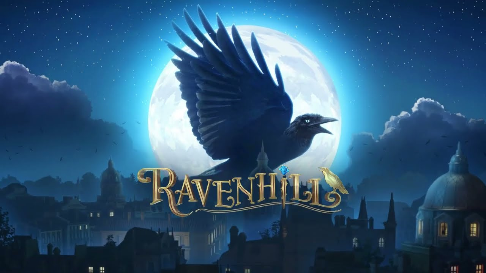
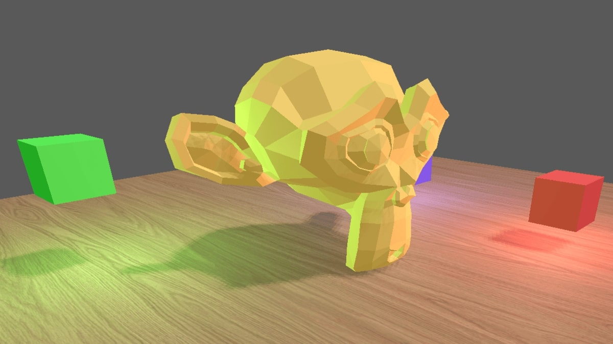
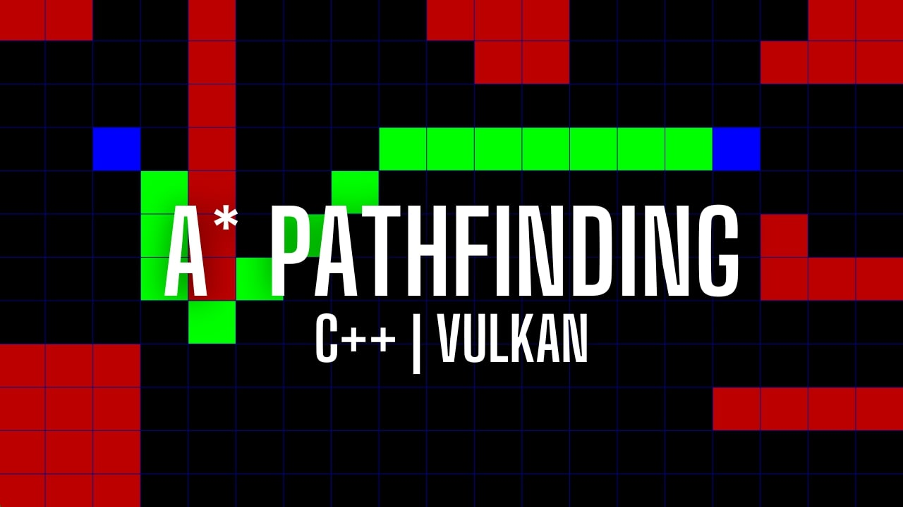

Ravenhill (Commercial, 2025-Present)
Ravenhill is a narrative-driven detective game where players have to search for hidden objects, solve puzzles, and complete quests to unravel the city's secrets. I'm part of the feature development team where I focus on implementing new features, optimize performance for mobile platforms, and collaborate closely with artists and designers to deliver polished, player-focused experiences. My work directly supports live operations and event systems.

Outfire (Commercial, 2023-2025)
Outfire was a fast-paced online shooter game. As part of the rendering and optimization team, I worked on identifying and resolving performance bottlenecks, optimizing shaders, reducing draw calls, and improving memory management. My contributions helped improve overall frame stability and rendering efficiency.

Hublix (Commercial, 2021-2023)
Hublix was a cozy, social-driven multiplayer game built in Unreal Engine, where players could meet, chat, and play in customizable social and private hubs across PC and mobile platforms. As a software engineer, I contributed to the core systems using C++ and Unreal Engine's networking system. I also developed a Python-based tooling system to improve the productivity of the design team.

Silverlight Engine (Personal, 2023-2025)
Silverlight is a modern, high-performance rendering engine built from scratch in C++ using the Vulkan API. Driven by a deep interest in graphics engineering, I started the project from a single triangle and progressively expanded it into a modular, architecturally clean engine capable of rendering complex 3D scenes with shadows.

Pathfinder (Personal, 2023)
Pathfinder is a simple 2D simulation app built in C++ and the Vulkan API to visualize and experiment with the A* pathfinding algorithm.

Kai's Clan (Commercial, 2020-2021)
Kai's Clan is an educational platform developed in Unity that blends physical robotics with virtual environments. It enables students to import custom 3D models, control real-world robots on a physical mat, and program their behaviors using Python or Blockly.
I implemented several core features, including real-time 3D model loading and AR/VR environments. I also collaborated with the backend and mechatronics teams to expand the robot command system and allow for more programmable robot interactions.

Titan Voyager (Personal, 2019)
Titan Voyager is a first-person shooter developed in C++ and modern OpenGL as a personal capstone project during my final university year. The goal was to apply everything I had learned in graphics programming to build a complete 3D game from scratch.
I implemented a custom rendering pipeline, first-person camera and control systems, cloth physics, and collision detection.

Slimey Jump (Personal, 2017)
Slimey Jump is a 2D platformer inspired by Doodle Jump. The game was made in C++ and OpenGL during my second college year.